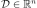
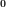
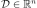
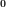

KarhunenLoeveResult¶
-
class
KarhunenLoeveResult(*args)¶ Result structure of a Karhunen Loeve algorithm.
- Available constructors:
KarhunenLoeveResult(implementation)
KarhunenLoeveResult(covModel, s, lambda, modes, modesAsProcessSample, projection)
Parameters: implementation :
KarhunenLoeveResultImplementationA specific implementation.
covModel :
CovarianceModelThe covariance model.
s : float,

The threshold used to select the most significant eigenmodes, defined in
KarhunenLoeveAlgorithm.lambda :
PointThe first eigenvalues of the Fredholm problem.
modes :
BasisThe first modes of the Fredholm problem.
modesAsProcessSample :
ProcessSampleThe values of the modes on the mesh associated to the KarhunenLoeve algorithm.
projection :
MatrixThe projection matrix.
Notes
Structure generally created by the method run() of a
KarhunenLoeveAlgorithmand obtained thanks to the method getResult().We consider
 a covariance function defined on , continuous at .
a covariance function defined on , continuous at .We note the solutions of the Fredholm problem associated to
 where K is the highest index
where K is the highest index  such that
such that  .
.We note
 the eigenvalues sequence and the eigenfunctions sequence.
the eigenvalues sequence and the eigenfunctions sequence.Then we define the linear projection function by:
(1)¶
where .
According to the Karhunen Loeve algorithm, the integral of (1) is replaced by a specific weighted and finite sum. Thus, the linear relation (1) becomes a relation between fields which allows the following matrix representation:
(2)¶
where
 is a
is a Fieldand the projection matrix.
the projection matrix.The inverse of
 is the lift function defined by:
is the lift function defined by:(3)¶
If the function where
 is the centered process which covariance function is associated to the eigenvalues and eigenfunctions , then the getEigenValues method enables to obtain the first eigenvalues of the Karhunen Loeve decomposition of and the method getModes enables to get the associated modes.
is the centered process which covariance function is associated to the eigenvalues and eigenfunctions , then the getEigenValues method enables to obtain the first eigenvalues of the Karhunen Loeve decomposition of and the method getModes enables to get the associated modes.Examples
>>> import openturns as ot >>> N = 256 >>> mesh = ot.IntervalMesher([N - 1]).build(ot.Interval(-1, 1)) >>> covariance_X = ot.AbsoluteExponential([1]) >>> process_X = ot.GaussianProcess(covariance_X, mesh) >>> s = 0.001 >>> algo_X = ot.KarhunenLoeveP1Algorithm(mesh, covariance_X, s) >>> algo_X.run() >>> result_X = algo_X.getResult()
Methods
getClassName()Accessor to the object’s name. getCovarianceModel()Accessor to the covariance model. getEigenValues()Accessor to the eigenvalues of the Karhunen Loeve decomposition. getId()Accessor to the object’s id. getImplementation(*args)Accessor to the underlying implementation. getModes()Get the modes as functions. getModesAsProcessSample()Accessor to the modes as a process sample. getName()Accessor to the object’s name. getProjectionMatrix()Accessor to the projection matrix. getScaledModes()Get the modes as functions scaled by the square-root of the corresponding eigenvalue. getScaledModesAsProcessSample()Accessor to the scaled modes as a process sample. getThreshold()Accessor to the limit ratio on eigenvalues. lift(coefficients)Lift the coefficients into a function. liftAsField(coefficients)Lift the coefficients into a field. project(*args)Project a function or a field on the eigenmodes basis. setName(name)Accessor to the object’s name. -
__init__(*args)¶ x.__init__(…) initializes x; see help(type(x)) for signature
-
getClassName()¶ Accessor to the object’s name.
Returns: class_name : str
The object class name (object.__class__.__name__).
-
getCovarianceModel()¶ Accessor to the covariance model.
Returns: covModel :
CovarianceModelThe covariance model.
-
getEigenValues()¶ Accessor to the eigenvalues of the Karhunen Loeve decomposition.
Returns: eigenVal :
PointThe most significant eigenvalues.
Notes
OpenTURNS truncates the sequence
 to the most significant terms, selected by the threshold defined in
to the most significant terms, selected by the threshold defined in KarhunenLoeveAlgorithm.
-
getId()¶ Accessor to the object’s id.
Returns: id : int
Internal unique identifier.
-
getImplementation(*args)¶ Accessor to the underlying implementation.
Returns: impl : Implementation
The implementation class.
-
getModes()¶ Get the modes as functions.
Returns: modes :
BasisThe truncated basis .
Notes
The basis is truncated to where
is determined by the  , defined in
, defined in KarhunenLoeveAlgorithm.
-
getModesAsProcessSample()¶ Accessor to the modes as a process sample.
Returns: modesAsProcessSample :
ProcessSampleThe values of each mode on a mesh whose vertices were used to discretize the Fredholm equation.
Notes
The modes are evaluated on the vertices of the mesh defining the process sample. The values of the i-th field are the values of the i-th mode on these vertices.
The mesh corresponds to the discretization points of the integral in (1).
-
getName()¶ Accessor to the object’s name.
Returns: name : str
The name of the object.
-
getProjectionMatrix()¶ Accessor to the projection matrix.
Returns: projection :
MatrixThe matrix
defined in (2).
-
getScaledModes()¶ Get the modes as functions scaled by the square-root of the corresponding eigenvalue.
Returns: modes :
BasisThe truncated basis .
Notes
The basis is truncated to where
is determined by the , defined in KarhunenLoeveAlgorithm.
-
getScaledModesAsProcessSample()¶ Accessor to the scaled modes as a process sample.
Returns: modesAsProcessSample :
ProcessSampleThe values of each scaled mode on a mesh whose vertices were used to discretize the Fredholm equation.
Notes
The modes are evaluated on the vertices of the mesh defining the process sample. The values of the i-th field are the values of the i-th mode on these vertices.
- The mesh corresponds to the discretization points used to discretize the integral
- (1).
-
getThreshold()¶ Accessor to the limit ratio on eigenvalues.
Returns: s : float,
The threshold
used to select the most significant eigenmodes, defined in KarhunenLoeveAlgorithm.
-
lift(coefficients)¶ Lift the coefficients into a function.
Parameters: coef :
PointThe coefficients .
Returns: modes :
FunctionThe function
 defined in (3).
defined in (3).Notes
The sum defining
is truncated to the first terms, where is determined by the , defined in KarhunenLoeveAlgorithm.
-
liftAsField(coefficients)¶ Lift the coefficients into a field.
Parameters: coef :
PointThe coefficients .
Returns: modes :
FieldNotes
The sum defining
is truncated to the first terms, where is determined by the , defined in KarhunenLoeveAlgorithm.
-
project(*args)¶ Project a function or a field on the eigenmodes basis.
- Available constructors:
project(function)
project(field)
project(basis)
project(fieldSample)
Parameters: function :
FunctionA function.
field :
FieldA field.
basis :
BasisA collection f functions.
fieldSample :
ProcessSampleA collection f fields.
Returns: point :
PointThe vector of the components of the function or the field in the eigenmodes basis
sample :
SampleThe collection of the vectors of the components of the collection of functions or fields in the eigenmodes basis
Notes
The project method calculates the projection (1) on a function or a field where only the first
elements of the sequences are calculated.
is determined by the , defined in KarhunenLoeveAlgorithm.Lets note the mesh coming from the
KarhunenLoeveResult(ie the one contained in the modesAsSampleProcessSample).If the given field is defined on , the associated values are directly used for the projection. Otherwise, a
P1LagrangeEvaluationfunction is built using this field and then used to interpolate the values of the field on .If evaluated from a function, the project method evaluates the function on and uses (2).
-
setName(name)¶ Accessor to the object’s name.
Parameters: name : str
The name of the object.